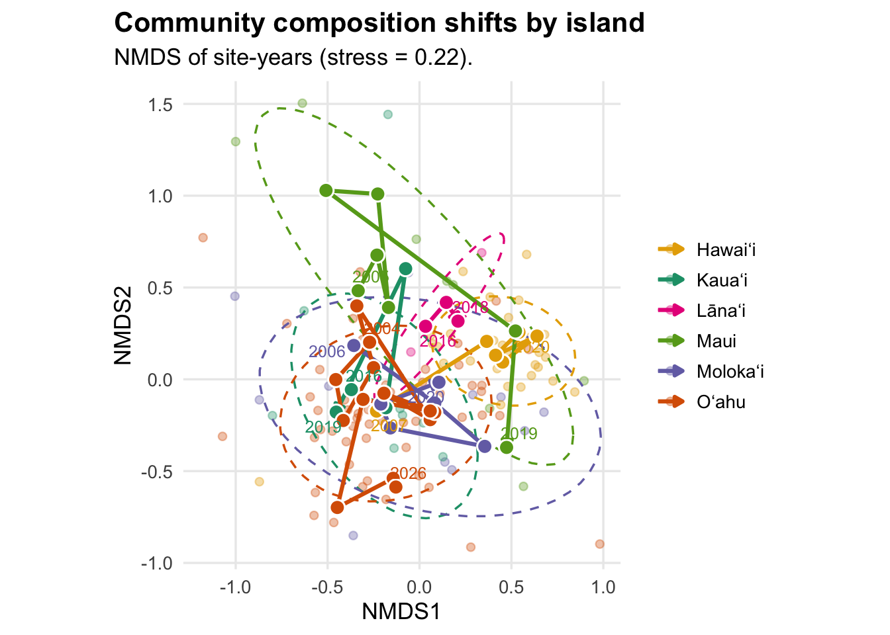
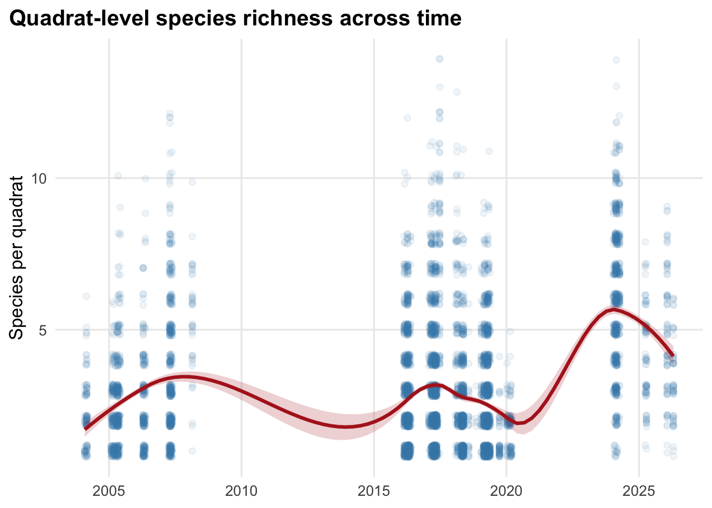
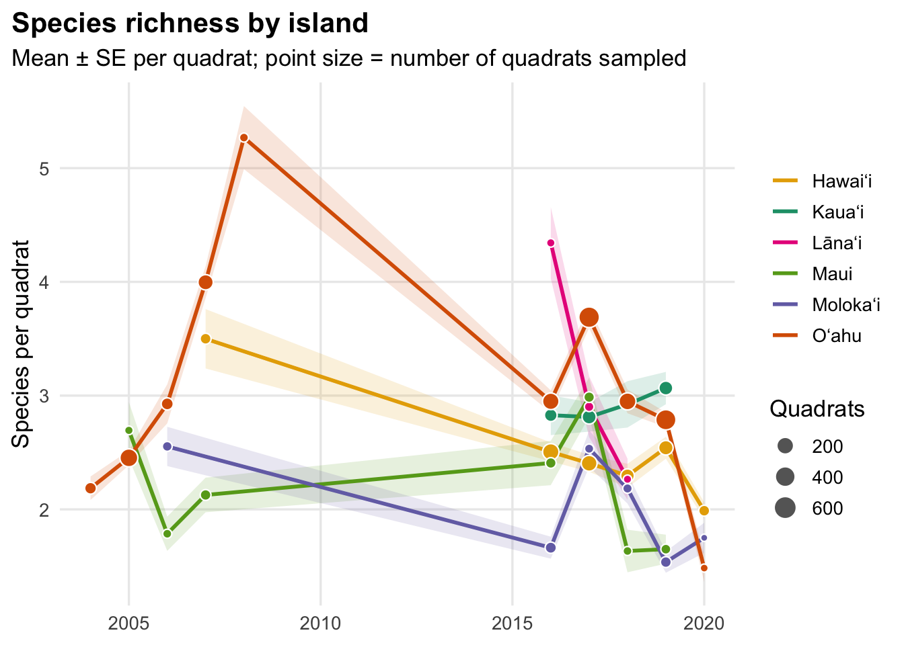
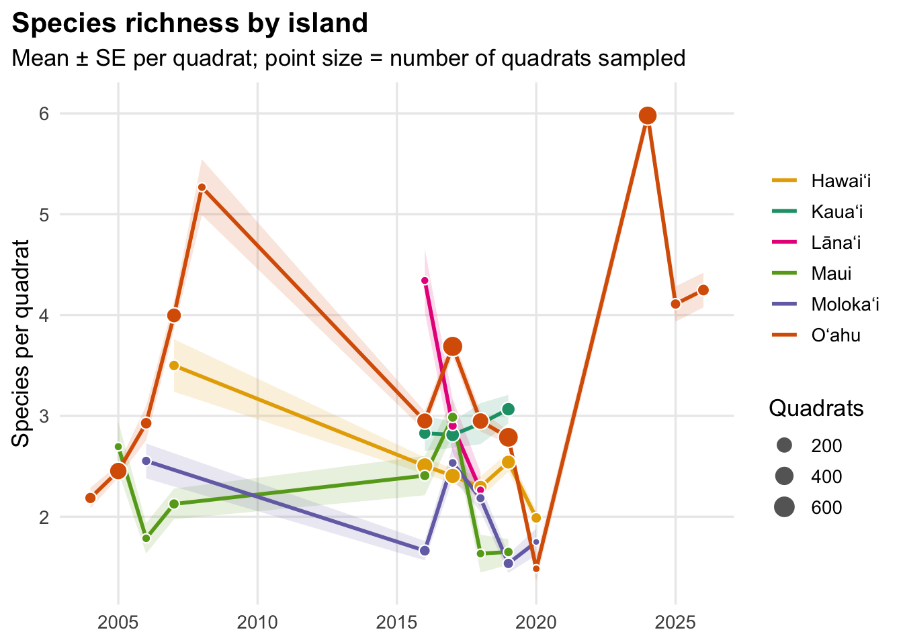
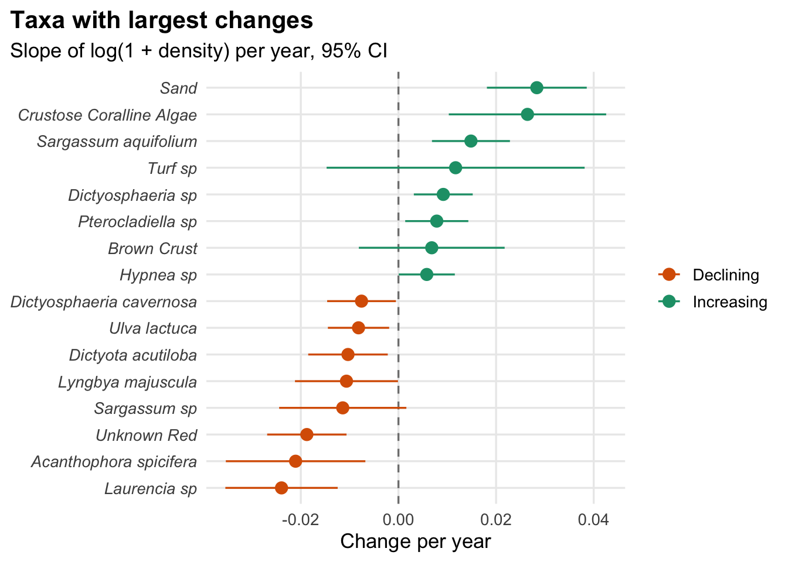

Show code
library(tidyverse) # dplyr, ggplot2, tidyr, purrr, lubridate, forcats
library(vegan) # NMDS, Bray-Curtis
library(ggrepel) # non-overlapping labels
library(scales)
library(broom) # tidy model output
library(here) library(tidyverse) # dplyr, ggplot2, tidyr, purrr, lubridate, forcats
library(vegan) # NMDS, Bray-Curtis
library(ggrepel) # non-overlapping labels
library(scales)
library(broom) # tidy model output
library(here) # sets one look for every plot in the document: minimal theme, no minor gridlines, left-aligned bold titles
theme_set(
theme_minimal(base_size = 13) +
theme(panel.grid.minor = element_blank(),
plot.title.position = "plot",
plot.title = element_text(face = "bold"))
)# reads the cleaned master sheet (one row = one taxon's count in one quadrat on one date)
dat <- read_csv(here("Outputs", "final_clean_master_sheet.csv"))# adds a year column, drops rows with no taxon or a missing/zero count (zero-count rows aren't observations)
dat <- dat %>%
mutate(year = year(date)) %>%
filter(!is.na(taxon_key), !is.na(count), count > 0)Had issues with duplicate entries from missing metadata (missing quadrat/transect IDs) causing duplicate entries for the same observations; fixing with the code below.
Identifying duplicated observations (2024-2026)
# ------------------------------------------------------------
# DEFINE WHAT MAKES TWO ROWS "THE SAME OBSERVATION"
# Everything about *what was seen where and when*; deliberately
# excludes the metadata columns that differ between the copies.
# ------------------------------------------------------------
# ID the columns that identify one observation. Two rows that match on
# all of these are treated as copies of the same observation.
# (NA counts as a match, so the all-NA quadrat_id in 2024+ doesn't block dedupe.)
key_cols <- c("date", "site_key", "transect_id", "quadrat_id",
"position", "taxon_raw", "count")# ------------------------------------------------------------
# DIAGNOSE: how many observations appear more than once, by year?
# Expect ~0% in most years and ~100% in 2025-2026 if your hunch is right.
# ------------------------------------------------------------
dup_check <- dat %>%
mutate(year = year(date)) %>%
count(year, across(all_of(key_cols)), name = "n_copies")
dup_check %>%
group_by(year) %>%
summarise(rows = sum(n_copies),
unique_obs = n(),
pct_duplicated = round(100 * mean(n_copies > 1), 1),
max_copies = max(n_copies)) %>%
print(n = Inf)
# Eyeball one duplicated observation: which columns differ between copies?
example <- dup_check %>% filter(n_copies > 1) %>% slice(1) %>% select(all_of(key_cols))
dat %>%
semi_join(example, by = key_cols) %>%
select(all_of(key_cols), everything()) %>%
glimpse()
# Also check the copies agree on the count. If this returns rows, the
# "duplicates" disagree on abundance and need a human decision:
dat %>%
mutate(year = year(date)) %>%
filter(year %in% 2024:2025) %>%
group_by(across(all_of(setdiff(key_cols, "count")))) %>%
filter(n_distinct(count) > 1) %>%
ungroup() %>%
nrow()Fixing duplicated entries:
# ------------------------------------------------------------
# FIX
# Only touch the affected years: in earlier years, a taxon listed twice
# in a quadrat could be a legitimate repeat and shouldn't be collapsed.
# ------------------------------------------------------------
dup_years <- 2024:2026 # the years that had duplicated entries; only these years get deduped
# Keep whichever copy has the most metadata filled in
# Counts non-missing cells per row, sorts so the fullest copy comes first, then keeps the first row for each unique observation
dedupe_keep_fullest <- function(df) {
df %>%
mutate(n_filled = rowSums(!is.na(across(everything())))) %>%
arrange(desc(n_filled)) %>%
distinct(across(all_of(key_cols)), .keep_all = TRUE) %>%
select(-n_filled)
}
# Leaves 2004-2020 untouched, dedupes 2024-2026, and stacks them back together in date/site/transect order
dat_clean <- bind_rows(
dat %>% filter(!year(date) %in% dup_years),
dat %>% filter( year(date) %in% dup_years) %>% dedupe_keep_fullest()
) %>%
arrange(date, site_key, transect_id, quadrat_id)# ------------------------------------------------------------
# VERIFY: rerun the diagnostic on dat_clean. pct_duplicated should be
# ~0 for 2024-2025 and row counts for those years should roughly halve.
# ------------------------------------------------------------
dat_clean %>%
mutate(year = year(date)) %>%
count(year, across(all_of(key_cols)), name = "n_copies") %>%
group_by(year) %>%
summarise(rows = sum(n_copies), pct_duplicated = round(100 * mean(n_copies > 1), 1)) %>%
print(n = Inf)
nrow(dat); nrow(dat_clean)Setting cleaned data as main dataframe to use from here:
# From here on, `dat` is the deduplicated data
dat <- dat_cleanNow, building counts within quadrats:
# Building the working table for everything below. For each site, date and
# taxon, adds up the counts within each quadrat.
# A quadrat is identified by site + date + transect + POSITION (not quadrat_id,
# which is blank in 2024-2026). This collapses any remaining repeated entries
# of the same taxon in the same quadrat into a single count.
quad_taxa <- dat %>%
mutate(quad_uid = paste(site_key, date, transect_id, position, sep = "|")) %>%
group_by(site_key, date, year, quad_uid, taxon_key) %>%
summarise(count = sum(count), .groups = "drop")Calculating sampling effort to standardize plots by # of quadrats sampled
# Sampling effort: number of quadrats per site-year (used to turn counts
# into densities, so years with more sampling don't look "more abundant")
# `effort` is used below to convert counts into densities (individuals
# per quadrat) for the NMDS and the winners/losers trends.
effort <- quad_taxa %>%
group_by(site_key, year) %>%
summarise(n_quadrats = n_distinct(quad_uid),
.groups = "drop")Calculating NMDS trajectories
# ------------------------------------------------------------
# COMMUNITY COMPOSITION: NMDS TRAJECTORIES
# ------------------------------------------------------------
# Builds the site x taxon table of densities (one row per site-year, one
# column per taxon, zeros filled in). Used by the NMDS and the winners/losers trends.
site_year_dens <- quad_taxa %>%
group_by(site_key, year, taxon_key) %>%
summarise(n = sum(count), .groups = "drop") %>%
left_join(effort, by = c("site_key", "year")) %>%
mutate(density = n / n_quadrats) %>%
select(site_key, year, taxon_key, density) %>%
pivot_wider(names_from = taxon_key, values_from = density, values_fill = 0) %>%
arrange(site_key, year)
# Splits the table into labels (`meta`) and the numbers-only matrix
# (`comm`). The square root reduces the influence of a few very abundant taxa.
meta <- site_year_dens %>% select(site_key, year)
comm <- site_year_dens %>% select(-site_key, -year) %>% as.matrix() %>% sqrt()
# Runs the NMDS: Bray-Curtis dissimilarity between site-years, squashed
# into 2 dimensions. Then attaches each site-year's coordinates to its labels.
set.seed(1) # makes code reproducible so that plot doesn't come out different each rendering
nmds <- metaMDS(comm, distance = "bray", k = 2, trymax = 50, trace = 0)
nmds_df <- bind_cols(meta, as.data.frame(scores(nmds, display = "sites")))Assigning each site to an island using latitude/longitudes:
# ------------------------------------------------------------
# ASSIGN EACH SITE TO AN ISLAND
# No island column in the data, so use each site's lat/long and pick the
# nearest island center. CHECK THE RESULT below, then patch by hand.
# ------------------------------------------------------------
# Approximate center point of each island (latitude, longitude)
islands <- tribble(
~island, ~ilat, ~ilon,
"Kauaʻi", 22.05, -159.55,
"Oʻahu", 21.47, -157.98,
"Molokaʻi", 21.14, -157.02,
"Lānaʻi", 20.83, -156.92,
"Maui", 20.80, -156.33,
"Hawaiʻi", 19.58, -155.50
)
# Given a coordinate, returns the name of the closest island center
# (NA if the site has no coordinates)
nearest_island <- function(lat, lon) {
if (is.na(lat) || is.na(lon)) return(NA_character_)
islands$island[which.min((islands$ilat - lat)^2 + (islands$ilon - lon)^2)]
}
# One row per site with its average coordinates, then its assigned island
site_island <- dat %>%
group_by(site_key) %>%
summarise(latitude = mean(latitude, na.rm = TRUE),
longitude = mean(longitude, na.rm = TRUE),
.groups = "drop") %>%
mutate(island = map2_chr(latitude, longitude, nearest_island))
# Sanity checks: sites per island, and any sites without coordinates
site_island %>% count(island)
site_island %>% arrange(island, site_key) %>% print(n = Inf)
# Manual fix for Mamala Bay, which didn't have lat/long coordinates from dataframe
site_island$island[site_island$site_key == "Mamala Bay"] <- "Oʻahu"
# One color per island.
# Names must match island names exactly (including the okina and kahakō) or that island loses its color.
island_cols <- c("Kauaʻi" = "#1b9e77", "Oʻahu" = "#d95f02", "Molokaʻi" = "#7570b3",
"Lānaʻi" = "#e7298a", "Maui" = "#66a61e", "Hawaiʻi" = "#e6ab02")Making NMDS plot (site-year), colored by island
# ------------------------------------------------------------
# SITE-YEAR NMDS, COLORED BY ISLAND
# Faint points = individual site-years. Ellipses = island spread.
# Bold path = island centroid through time (first and last year labeled).
# ------------------------------------------------------------
# Attaches each site-year's island; drops any site with no island
nmds_isl <- nmds_df %>%
left_join(select(site_island, site_key, island), by = "site_key") %>%
filter(!is.na(island))
# Average NMDS position of each island in each year (the bold path).
centroids <- nmds_isl %>%
group_by(island, year) %>%
summarise(NMDS1 = mean(NMDS1), NMDS2 = mean(NMDS2), .groups = "drop") %>%
arrange(island, year)
# Only the first and last year of each island get a text label
centroid_labels <- centroids %>%
group_by(island) %>%
filter(year %in% c(min(year), max(year)))
# The plot, layer by layer:
# geom_point (faint) each site-year, colored by island
# stat_ellipse (dashed) 80% ellipse showing each island's spread
# geom_path (bold arrow) island centroid moving through time
# geom_point (large) centroid for each year
# geom_text_repel year labels at start and end of each path
# coord_equal keeps both NMDS axes on the same scale
p_nmds_island <- ggplot(nmds_isl, aes(NMDS1, NMDS2, color = island)) +
geom_point(alpha = 0.35, size = 1.8) +
stat_ellipse(level = 0.8, linewidth = 0.6, linetype = "dashed") +
geom_path(data = centroids, linewidth = 1.1,
arrow = arrow(length = unit(0.18, "cm"), type = "closed")) +
geom_point(data = centroids, aes(fill = island), shape = 21,
color = "white", size = 3.5, stroke = 0.8) +
geom_text_repel(data = centroid_labels, aes(label = year),
size = 3.3, show.legend = FALSE, seed = 1) +
scale_color_manual(values = island_cols, name = NULL) +
scale_fill_manual(values = island_cols, guide = "none") +
coord_equal() +
labs(title = "Community composition shifts by island",
subtitle = sprintf("NMDS of site-years (stress = %.2f).",
nmds$stress))
p_nmds_island
# ------------------------------------------------------------
# DIVERSITY THROUGH TIME
# Metrics computed per quadrat, then averaged. This keeps them
# comparable across years even when effort differs.
# ------------------------------------------------------------
# One row per quadrat with its diversity metrics.
# The final plots only use `richness` (number of distinct taxa in the quadrat).
div_quad <- quad_taxa %>%
group_by(site_key, date, year, quad_uid) %>%
summarise(richness = n_distinct(taxon_key),
.groups = "drop")# Pooled richness plot: every dot is one quadrat (jittered vertically so
# overlapping points are visible); the red line is a LOESS smooth of richness
# over time with its uncertainty band.
# Note: The smooth is drawn straight across the survey gaps
# (2009-2015, 2021-2023), so the line there is an interpolation, not data.
p_div_pooled <- div_quad %>%
ggplot(aes(date, richness)) +
geom_jitter(alpha = 0.08, width = 0, height = 0.2, color = "steelblue") +
geom_smooth(method = "loess", span = 0.6, color = "firebrick", fill = "firebrick", alpha = 0.2) +
labs(title = "Quadrat-level species richness across time", x = NULL, y = "Species per quadrat")
p_div_pooled
# ============================================================
# Community richness over time, by island
# ============================================================
# Adds each quadrat's island; drops quadrats from sites with no island
rich_isl <- div_quad %>%
left_join(select(site_island, site_key, island), by = "site_key") %>%
filter(!is.na(island))# ------------------------------------------------------------
# MEAN RICHNESS PER QUADRAT, ONE LINE PER ISLAND
# Per-quadrat richness is effort-standardized, so years with more
# sampling don't automatically look richer.
# ------------------------------------------------------------
# Mean richness per quadrat for each island-year, with standard error
# (SE is NA where an island-year has only one quadrat) and the number of
# quadrats behind each mean (used for point size)
island_year_rich <- rich_isl %>%
group_by(island, year) %>%
summarise(mean = mean(richness),
se = sd(richness) / sqrt(n()),
n_quadrats = n(),
.groups = "drop")Plotting only through 2020, where we have data across all islands:
# Plotting function; `max_year` cuts off the x-axis (Inf = show all years).
# geom_ribbon mean +/- SE band
# geom_line island mean through time (connects across survey gaps)
# geom_point one dot per island-year, sized by number of quadrats
# guides(size) makes the size legend keys show up in grey
plot_rich_island <- function(max_year = Inf) {
island_year_rich %>%
filter(year <= max_year) %>%
ggplot(aes(year, mean, color = island, fill = island)) +
geom_ribbon(aes(ymin = mean - se, ymax = mean + se), alpha = 0.15, color = NA) +
geom_line(linewidth = 1) +
geom_point(aes(size = n_quadrats), shape = 21, color = "white", stroke = 0.6) +
scale_color_manual(values = island_cols, name = NULL) +
scale_fill_manual(values = island_cols, guide = "none") +
scale_size_continuous(range = c(1.5, 5), name = "Quadrats") +
guides(size = guide_legend(override.aes = list(fill = "grey40", color = "grey40")))+
scale_x_continuous(breaks = pretty_breaks()) +
labs(title = "Species richness by island",
subtitle = "Mean \u00b1 SE per quadrat; point size = number of quadrats sampled",
x = NULL, y = "Species per quadrat")
}
# Draws the plot using only data through 2020, where we have data for all islands
p_rich_island_2020 <- plot_rich_island(max_year = 2020)
p_rich_island_2020
Plotting through 2026, to visualize all data:
# Including 2024-2026 data; calling plot_rich_island() with no argument.
plot_rich_island()
Calculating trends using model: log1p(density) ~ year + site (site-years incl. zeros).
# Reshapes the site-year x taxon table back into long format: one row per
# site, year and taxon, with zeros included for absences
dens_long <- site_year_dens %>%
pivot_longer(-c(site_key, year), names_to = "taxon_key", values_to = "density")
# For each taxon (keeping only those present in at least 8 site-years),
# fits a linear model of log(1 + density) on year, with site as a factor so
# each site is compared with itself over time. Keeps just the `year` slope
# (change per year) and its 95% confidence interval.
trends <- dens_long %>%
group_by(taxon_key) %>%
filter(sum(density > 0) >= 8) %>% # need enough presences
group_modify(~ tidy(lm(log1p(density) ~ year + site_key, data = .x), conf.int = TRUE) %>%
filter(term == "year")) %>%
ungroup()Plotting trends:
# Takes the 8 most positive and 8 most negative slopes, labels each as
# Increasing or Declining, and plots slope +/- 95% CI, ordered by slope.
# `distinct()` prevents duplicate rows if there are fewer than 16 taxa.
# A dashed line at 0 marks "no change"; intervals crossing it aren't clearly
# different from no trend.
p_trends <- bind_rows(slice_max(trends, estimate, n = 8),
slice_min(trends, estimate, n = 8)) %>%
distinct() %>%
mutate(direction = if_else(estimate > 0, "Increasing", "Declining")) %>%
ggplot(aes(estimate, fct_reorder(taxon_key, estimate), color = direction)) +
geom_vline(xintercept = 0, linetype = "dashed", color = "grey50") +
geom_pointrange(aes(xmin = conf.low, xmax = conf.high)) +
scale_color_manual(values = c(Increasing = "#1b9e77", Declining = "#d95f02"), name = NULL) +
labs(title = "Taxa with largest changes", subtitle = "Slope of log(1 + density) per year, 95% CI",
x = "Change per year", y = NULL) +
theme(axis.text.y = element_text(face = "italic"))
p_trends